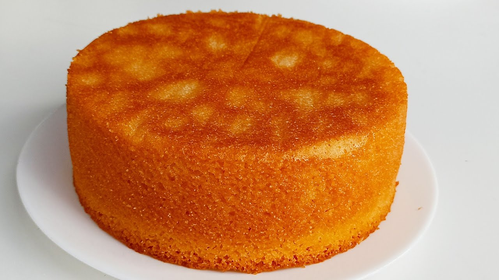

Ankita's Recipe for the Best
Eggless Semolina Cake

Ingredients
Wet Ingredients
- 1 cup milk
- 1/4 cup yogurt
- 1/2 teaspoon vanilla extract
- 1/4 cup flavorless oil
- 1 stick unsalted butter
- orange zest (optional)
Dry Ingredients
- 3/4 cup sugar
- 1/2 cup semolina
- 1/2 cup all purpose flour
- A pinch of salt (skip this if you are using salted butter)
- 3/4 teaspoon baking powder
- 1/2 teaspoon baking soda
Instructions
- Preheat oven at 350o F.
- In a large bowl, add all the ingredients together except the milk, orange zest, baking soda, and baking powder.
- Add 3/4 cup milk to the bowl and give the mix a good whisk.
- Add the remaining 1/4 cup milk and rest the batter for about 30 minutes.
- Add baking soda, baking powder, and the orange zest and whisk again.
- If required, add little bit more milk to achieve a nice cake batter consistency.
- Prepare the baking pan by greasing it with butter and putting a parchment paper at the bottom.
- Pour the batter in the pan and bake it for 36 minutes or until a knife, when poked in the center of the cake, comes out clean.
To go back, click Home